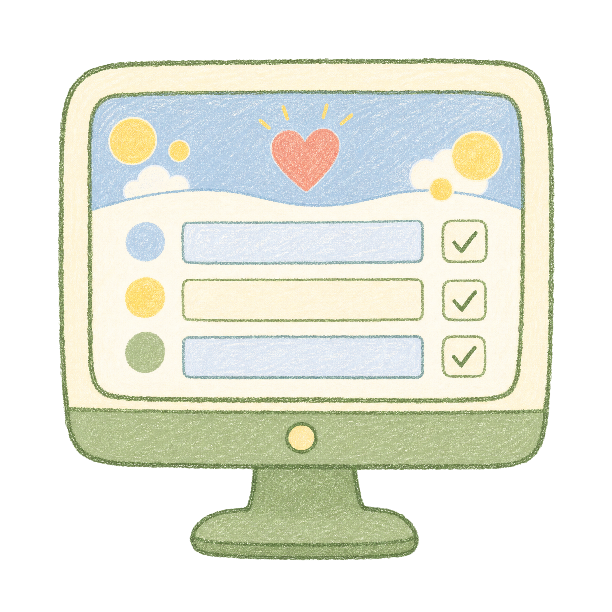
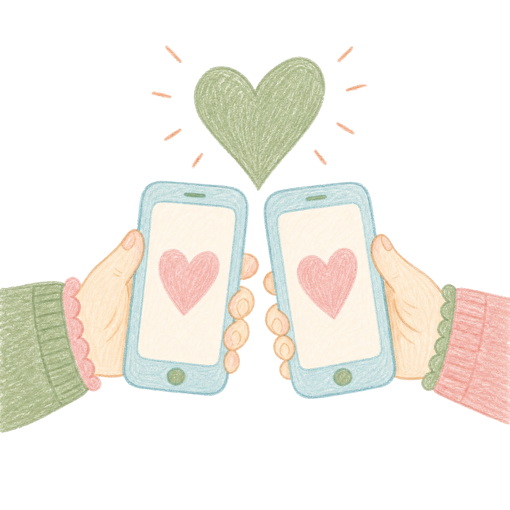
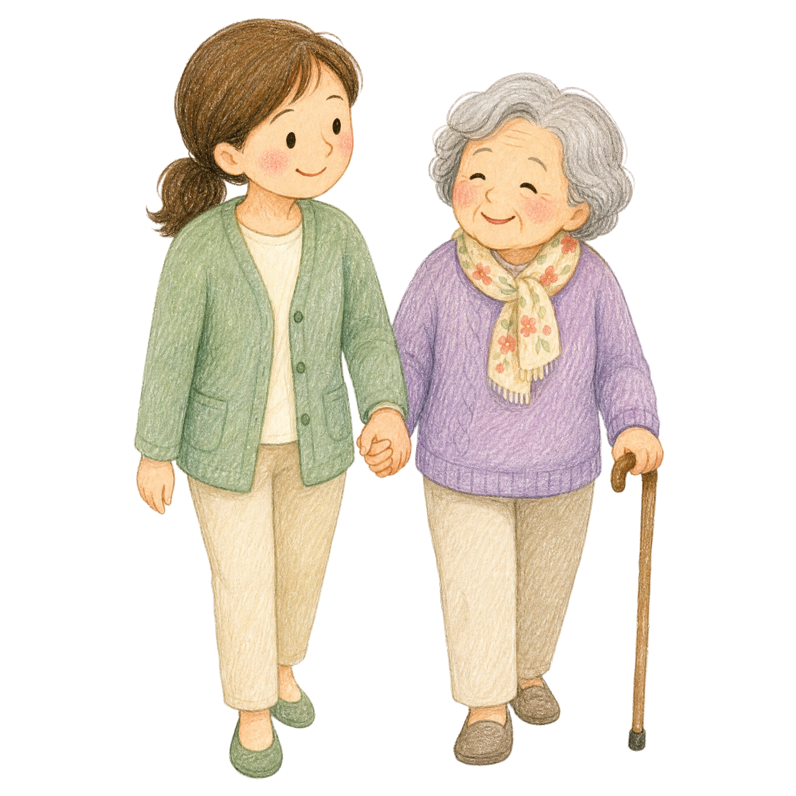
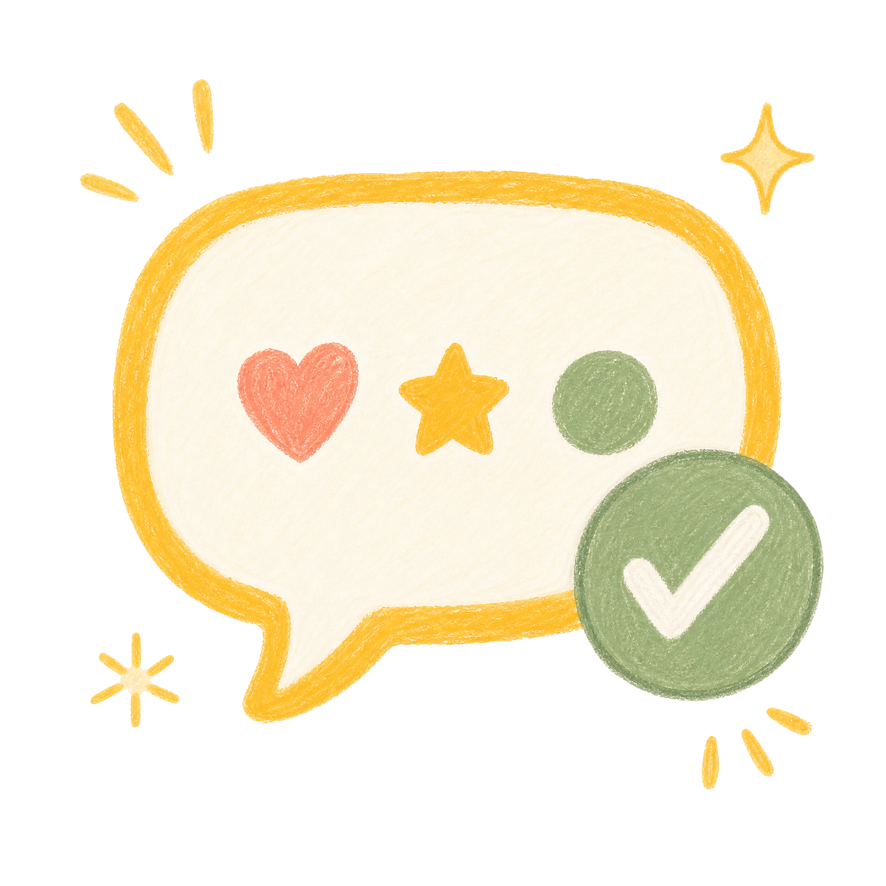

부모님의 안전한 병원길, 위드브릿지가 든든하게 동행합니다.
서비스 예약 및 정산 시 현금처럼 즉시 사용 가능한
웰컴 쿠폰과 후기 적립금을 드려요.
첫 동행 5,000원 할인 쿠폰
위드브릿지와 함께하는 첫 시작. 부모님의 안전한 병원 동행 부담을 덜어드립니다.
재이용 시 사용 가능한 적립금
따뜻했던 동행 경험을 들려주세요. 정성스러운 후기를 남겨주시는 모든 분께 파격적인 리워드를 드립니다.
※ 후기 적립금은 케어 완료 후 작성 시 즉시 지급되며, 다음 예약 정산 시 현금처럼 사용 가능합니다. (유효기간 180일 경과 시 자동 소멸)
부모님의 병원길이 외롭거나 불안하지 않도록,
전문 매니저가 처음부터 끝까지 함께합니다.
간호사·요양보호사 등 전문 자격을 보유한 매니저만 철저한 검증을 거쳐 배정됩니다.
진료 과정과 의사 전달 사항을 카톡으로 실시간 공유해 언제든 안심하고 확인하실 수 있습니다.
접수, 진료, 수납, 약 수령, 귀가까지 전 과정을 매니저가 처음부터 끝까지 밀착 케어합니다.
인천 및 경기 인근 지역을 중심 밀착 케어 서비스로 연결합니다.
어르신의 안전한 병원 진료와 편안한 일상을 연결하는
1:1 맞춤형 동행 케어 서비스를 제공합니다.
| 서비스 카테고리 | 기본 요금 (2시간) | 초과 요금 (30분당) | 서비스 내용 |
|---|---|---|---|
| 시니어 병원 동행 | 50,000원 | 12,500원 | 집 앞 픽업 ➔ 병원 이동 ➔ 접수/수납/약국 동행 ➔ 진료 내용 보호자 피드백 ➔ 안전 귀가 |
| 생활 편의 대행 | 40,000원 | 10,000원 | 관공서·은행 업무 동행, 필수 생필품 장보기 대행/동행, 산책 및 말벗, 맞춤형 스마트폰 활용 교육 |
| 복합 매칭 서비스 (동행 + 생활편의) |
60,000원 | 15,000원 | 병원 진료를 마친 후 약국에 들렀다가 은행 업무를 보거나 장보기를 함께 해결하는 원스톱 케어 |
* 위드브릿지의 모든 동행에는 매니저 안심케어(배상책임) 혜택이 기본 포함되어 있습니다.
이용 24시간 이내 긴급 예약을 요청하실 때 적용됩니다.
케어 매니저의 자차 이동 지원 또는 보호자 차량 대리 운행이 필요할 때 적용됩니다.
마음까지 이어주는 안심 동행, 위드브릿지가 함께합니다.

위드브릿지 웹페이지 또는 카카오톡으로 희망하는 일시와 병원, 필요 서비스를 알려주세요. 바쁜 보호자분도 1분 만에 쉽고 빠르게 접수하실 수 있습니다.

접수 확인 후 전문 케어 자격을 갖춘 맞춤 동행 매니저가 배정됩니다. 매니저의 프로필과 이력을 사전에 확인한 후 안심하고 서비스를 이용하실 수 있습니다.

약속된 시간에 매니저가 어르신 댁으로 방문하여 병원 이동, 접수, 진료 보조, 약 수령까지 전 과정을 든든하게 밀착 케어합니다.

동행 시작부터 귀가까지 전 과정을 카카오톡 알림으로 실시간 공유합니다. 진료 후에는 의사 전달사항이 담긴 '안심 리포트'를 전달해 드립니다.
이제 막 첫걸음을 내딛는 위드브릿지는 어르신과 보호자님의 목소리에 귀 기울이고 있습니다.
따뜻했던 동행의 순간을 들려주세요.